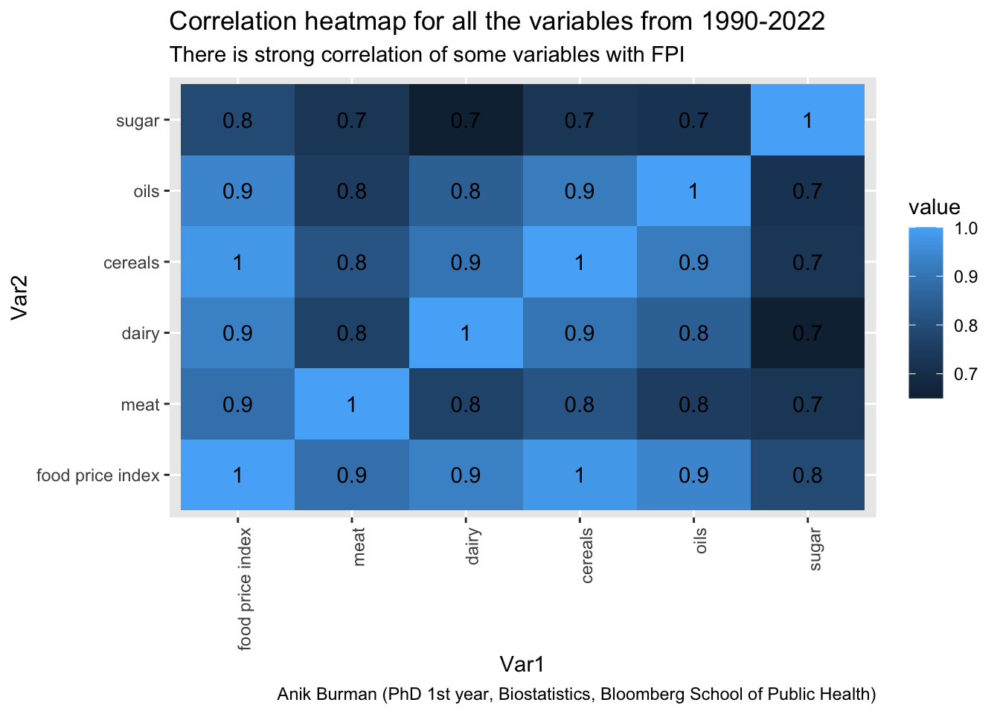
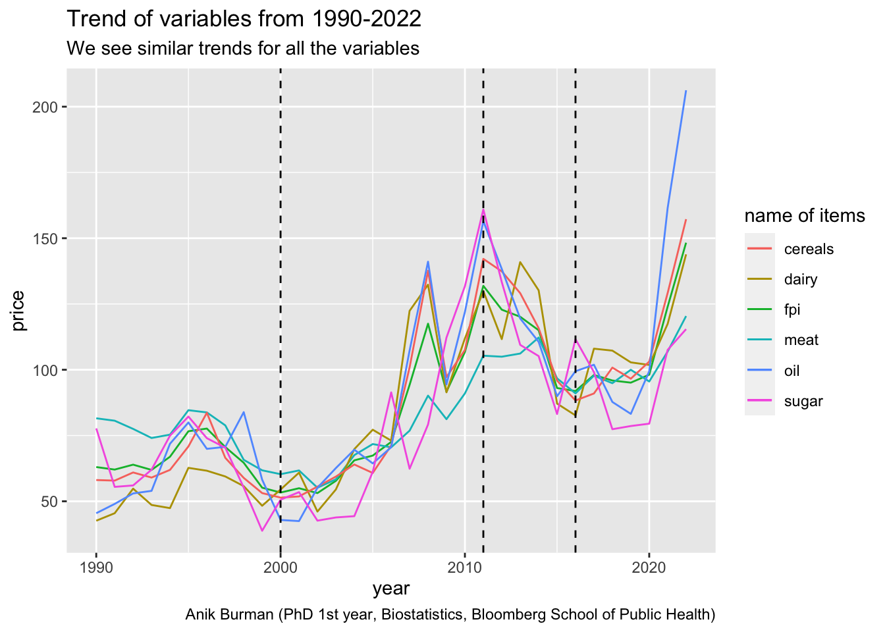

library(dplyr)
library(readr)
library(stringr)
library(lubridate)
library(reshape2)
library(ggplot2)
library(quarto)Example Analysis
Here I will present a very brief analysis of a data about global food prices in a monthly basis starting from 1990 all the way upto 2022. The data which I have used for analysis here is taken from Kaggle under the section of food data sets. The name of the data set is Global Food Prices Year by Year. The data data here gives the value of food price index for every month of the years specified. The data also provides prices of various raw materials like meat, cereals, oil etc. With increasing prices of food over the years, this data has become interesting because analyzing this data might help us to find some reasons which are causing this rise of food prices.

The above figure used in the analysis of this data in the analysis named Food Price Change Anlaysis done by Fethullah Ceviz is really interesting because we can see a clear temporal pattern in the food price index over the varying years. This heatmap was the reason why i chose to analyse this data set.
With Increase in prices of food, it can very well happen that this can lead to a food crisis because people might not be able to afford enough food for them to sustain. So researchers and policy makers are the people who should go through these type of data sets in order to see what is the main reason for this price hike an make interventions to keep the prices in control. So this brief analysis can be of importance to policy makers and people from agriculture and food production departments of different states.
The following note provides a short dictionary for the data that we have used. One thing to mention here is that the data description in the website has not said anything about the units of each variable by which they are presented, and so for the entire analysis, I have assumed that they are on the same scale. This is a simplifying assumption, which helps in making some plots.
Note
Data dictionary for Global Food Prices Year by Year
index : a variable indexing every month of each year
date : Monthly first date of every year
food price index : This is the representative of the food price for a particular month of the year
meat : price of meat (monthly)
dairy : price of dairy (monthly)
cereals : price of cereals (monthly)
oil : price of oil (monthly)
sugar : price of sugar (monthly)
R Libraries
I have used the following libraries for the entire analysis:
Data Cleaning
At first, we cleaned the .csv file provided in the website in a suitable way so that we can use it properly. The raw data was provided in a character string format. The main goal for this section was to convert it to a data frame.
data = read_csv("food_price_data.csv")
head(data) # raw data# A tibble: 6 × 1
`Date Food.Price.Index Meat Dairy Cereals Oils Sugar`
<chr>
1 1 01/01/1990 64.1 73.4 53.5 64.1 44.59 87.9
2 2 01/02/1990 64.5 76 52.2 62.2 44.5 90.7
3 3 01/03/1990 63.8 77.8 41.4 61.3 45.75 95.1
4 4 01/04/1990 65.8 80.4 48.4 62.8 44.02 94.3
5 5 01/05/1990 64.4 81 39.2 62 45.5 90.4
6 6 01/06/1990 63.7 83.1 39.2 60.7 43.8 80.3 data_modified = t(data.frame(apply(data, 1,
function(x)
{strsplit(x, split = " ")})))
# spliting strings
data_modified = as_tibble(data_modified) # converting to data.frame
colnames(data_modified) = c("index",
"date",
"food price index",
"meat",
"dairy",
"cereals",
"oils",
"sugar")
data_modified[,-2] = apply(data_modified[ , -2], 2,
function(x) as.numeric(as.character(x)))
data_modified[,2] = mdy(sapply(data_modified[,2],
function(x){strsplit(x,split = "/")}))
head(data_modified) # modified data# A tibble: 6 × 8
index date `food price index` meat dairy cereals oils sugar
<dbl> <date> <dbl> <dbl> <dbl> <dbl> <dbl> <dbl>
1 1 1990-01-01 64.1 73.4 53.5 64.1 44.6 87.9
2 2 1990-01-02 64.5 76 52.2 62.2 44.5 90.7
3 3 1990-01-03 63.8 77.8 41.4 61.3 45.8 95.1
4 4 1990-01-04 65.8 80.4 48.4 62.8 44.0 94.3
5 5 1990-01-05 64.4 81 39.2 62 45.5 90.4
6 6 1990-01-06 63.7 83.1 39.2 60.7 43.8 80.3Brief exploratory analysis
Our main aim here is to see which of the variables provided in the dataset seems to be associated with the monthly food price index. In order to see that we have computed pairwise correlation heatmap for all the variables including the food price index (FPI). The following heatmap shows the result:
cormat = round(cor(data_modified[,-c(1,2)]),2)
melted_cormat = melt(cormat)
ggplot(data = melted_cormat, aes(x=Var1, y=Var2, fill=value)) +
geom_tile() +
geom_text(aes(label = round(value, 1))) +
theme(axis.text.x = element_text(angle = 90, hjust = 1,vjust = 1)) +
labs(title = "Correlation heatmap for all the variables from 1990-2022",
subtitle = "There is strong correlation of some variables with FPI",
caption = "Anik Burman (PhD 1st year, Biostatistics, Bloomberg School of Public Health)") 
Introduction of new variables
year = as.numeric(format(data_modified$date,"%Y"))
data_modified = data_modified %>%
mutate(year = year,
decade = ifelse(year <= 2000,"<2000",
ifelse(year >2000 & year<= 2011,
"2000-2011",
ifelse(year >2011 & year<=2016,
"2011-2016",
">2016"))))
data_modified$decade [1] "<2000" "<2000" "<2000" "<2000" "<2000" "<2000"
[7] "<2000" "<2000" "<2000" "<2000" "<2000" "<2000"
[13] "<2000" "<2000" "<2000" "<2000" "<2000" "<2000"
[19] "<2000" "<2000" "<2000" "<2000" "<2000" "<2000"
[25] "<2000" "<2000" "<2000" "<2000" "<2000" "<2000"
[31] "<2000" "<2000" "<2000" "<2000" "<2000" "<2000"
[37] "<2000" "<2000" "<2000" "<2000" "<2000" "<2000"
[43] "<2000" "<2000" "<2000" "<2000" "<2000" "<2000"
[49] "<2000" "<2000" "<2000" "<2000" "<2000" "<2000"
[55] "<2000" "<2000" "<2000" "<2000" "<2000" "<2000"
[61] "<2000" "<2000" "<2000" "<2000" "<2000" "<2000"
[67] "<2000" "<2000" "<2000" "<2000" "<2000" "<2000"
[73] "<2000" "<2000" "<2000" "<2000" "<2000" "<2000"
[79] "<2000" "<2000" "<2000" "<2000" "<2000" "<2000"
[85] "<2000" "<2000" "<2000" "<2000" "<2000" "<2000"
[91] "<2000" "<2000" "<2000" "<2000" "<2000" "<2000"
[97] "<2000" "<2000" "<2000" "<2000" "<2000" "<2000"
[103] "<2000" "<2000" "<2000" "<2000" "<2000" "<2000"
[109] "<2000" "<2000" "<2000" "<2000" "<2000" "<2000"
[115] "<2000" "<2000" "<2000" "<2000" "<2000" "<2000"
[121] "<2000" "<2000" "<2000" "<2000" "<2000" "<2000"
[127] "<2000" "<2000" "<2000" "<2000" "<2000" "<2000"
[133] "2000-2011" "2000-2011" "2000-2011" "2000-2011" "2000-2011" "2000-2011"
[139] "2000-2011" "2000-2011" "2000-2011" "2000-2011" "2000-2011" "2000-2011"
[145] "2000-2011" "2000-2011" "2000-2011" "2000-2011" "2000-2011" "2000-2011"
[151] "2000-2011" "2000-2011" "2000-2011" "2000-2011" "2000-2011" "2000-2011"
[157] "2000-2011" "2000-2011" "2000-2011" "2000-2011" "2000-2011" "2000-2011"
[163] "2000-2011" "2000-2011" "2000-2011" "2000-2011" "2000-2011" "2000-2011"
[169] "2000-2011" "2000-2011" "2000-2011" "2000-2011" "2000-2011" "2000-2011"
[175] "2000-2011" "2000-2011" "2000-2011" "2000-2011" "2000-2011" "2000-2011"
[181] "2000-2011" "2000-2011" "2000-2011" "2000-2011" "2000-2011" "2000-2011"
[187] "2000-2011" "2000-2011" "2000-2011" "2000-2011" "2000-2011" "2000-2011"
[193] "2000-2011" "2000-2011" "2000-2011" "2000-2011" "2000-2011" "2000-2011"
[199] "2000-2011" "2000-2011" "2000-2011" "2000-2011" "2000-2011" "2000-2011"
[205] "2000-2011" "2000-2011" "2000-2011" "2000-2011" "2000-2011" "2000-2011"
[211] "2000-2011" "2000-2011" "2000-2011" "2000-2011" "2000-2011" "2000-2011"
[217] "2000-2011" "2000-2011" "2000-2011" "2000-2011" "2000-2011" "2000-2011"
[223] "2000-2011" "2000-2011" "2000-2011" "2000-2011" "2000-2011" "2000-2011"
[229] "2000-2011" "2000-2011" "2000-2011" "2000-2011" "2000-2011" "2000-2011"
[235] "2000-2011" "2000-2011" "2000-2011" "2000-2011" "2000-2011" "2000-2011"
[241] "2000-2011" "2000-2011" "2000-2011" "2000-2011" "2000-2011" "2000-2011"
[247] "2000-2011" "2000-2011" "2000-2011" "2000-2011" "2000-2011" "2000-2011"
[253] "2000-2011" "2000-2011" "2000-2011" "2000-2011" "2000-2011" "2000-2011"
[259] "2000-2011" "2000-2011" "2000-2011" "2000-2011" "2000-2011" "2000-2011"
[265] "2011-2016" "2011-2016" "2011-2016" "2011-2016" "2011-2016" "2011-2016"
[271] "2011-2016" "2011-2016" "2011-2016" "2011-2016" "2011-2016" "2011-2016"
[277] "2011-2016" "2011-2016" "2011-2016" "2011-2016" "2011-2016" "2011-2016"
[283] "2011-2016" "2011-2016" "2011-2016" "2011-2016" "2011-2016" "2011-2016"
[289] "2011-2016" "2011-2016" "2011-2016" "2011-2016" "2011-2016" "2011-2016"
[295] "2011-2016" "2011-2016" "2011-2016" "2011-2016" "2011-2016" "2011-2016"
[301] "2011-2016" "2011-2016" "2011-2016" "2011-2016" "2011-2016" "2011-2016"
[307] "2011-2016" "2011-2016" "2011-2016" "2011-2016" "2011-2016" "2011-2016"
[313] "2011-2016" "2011-2016" "2011-2016" "2011-2016" "2011-2016" "2011-2016"
[319] "2011-2016" "2011-2016" "2011-2016" "2011-2016" "2011-2016" "2011-2016"
[325] ">2016" ">2016" ">2016" ">2016" ">2016" ">2016"
[331] ">2016" ">2016" ">2016" ">2016" ">2016" ">2016"
[337] ">2016" ">2016" ">2016" ">2016" ">2016" ">2016"
[343] ">2016" ">2016" ">2016" ">2016" ">2016" ">2016"
[349] ">2016" ">2016" ">2016" ">2016" ">2016" ">2016"
[355] ">2016" ">2016" ">2016" ">2016" ">2016" ">2016"
[361] ">2016" ">2016" ">2016" ">2016" ">2016" ">2016"
[367] ">2016" ">2016" ">2016" ">2016" ">2016" ">2016"
[373] ">2016" ">2016" ">2016" ">2016" ">2016" ">2016"
[379] ">2016" ">2016" ">2016" ">2016" ">2016" ">2016"
[385] ">2016" ">2016" ">2016" ">2016" ">2016" ">2016" decade_name = c("<2000","2000-2011","2011-2016",">2016")
average_data = data_modified %>%
group_by(year) %>%
select(`food price index`,meat,dairy,cereals,oils,sugar) %>%
summarise(across(everything(), mean))Adding missing grouping variables: `year`print(head(average_data))# A tibble: 6 × 7
year `food price index` meat dairy cereals oils sugar
<dbl> <dbl> <dbl> <dbl> <dbl> <dbl> <dbl>
1 1990 63.0 81.6 42.6 58.1 45.5 77.7
2 1991 62.1 80.6 45.5 57.9 49.0 55.5
3 1992 63.9 77.5 54.8 61.0 53.0 56.0
4 1993 61.9 74.1 48.6 59.0 54.0 62.0
5 1994 66.9 75.3 47.4 61.9 71.9 75.0
6 1995 76.6 84.6 62.7 70.8 80.0 82.2ggplot(average_data,aes(x = year))+
geom_line(aes(y = `food price index` , color="fpi")) +
geom_line(aes(y = meat , color="meat")) +
geom_line(aes(y = dairy , color="dairy")) +
geom_line(aes(y = cereals , color="cereals")) +
geom_line(aes(y = oils , color="oil")) +
geom_line(aes(y = sugar , color="sugar")) +
labs(color="name of items") +
xlab("year") +
ylab("price") +
geom_vline(xintercept = c(2000,2011,2016),linetype = "dashed", colour = "black")
melted_cormat = NULL
for(i in 1:4)
{
cormat <- round(cor(data_modified[which(data_modified$decade==decade_name[i]),-c(1,2,9,10)]),2)
head(cormat)
melted = melt(cormat)
melted_cormat = rbind(melted_cormat ,cbind(melted,rep(decade_name[i],nrow(melted))))
head(melted_cormat)
}
melted_cormat[,4] = as.factor(melted_cormat[,4])
colnames(melted_cormat)[4] = "decade"
ggplot(data = melted_cormat, aes(x=Var1, y=Var2, fill=value)) +
geom_tile() +
facet_wrap(~decade,ncol = 2) +
geom_text(aes(label = round(value, 1)), size = 2) +
theme(axis.text.x = element_text(angle = 90, hjust = 1,vjust = 1))
ggplot(data = data_modified, aes(`food price index`)) +
geom_histogram(aes(y = ..density..),binwidth = 5,colour= "black", fill = "white") +
geom_density(fill="blue", alpha = .2) +
facet_wrap(~decade)
ggplot(data = data_modified, aes(meat)) +
geom_histogram(aes(y = ..density..),binwidth = 5,colour= "black", fill = "white") +
geom_density(fill="blue", alpha = .2) +
facet_wrap(~decade)
ggplot(data = data_modified, aes(dairy)) +
geom_histogram(aes(y = ..density..),binwidth = 5,colour= "black", fill = "white") +
geom_density(fill="blue", alpha = .2) +
facet_wrap(~decade)
ggplot(data = data_modified, aes(oils)) +
geom_histogram(aes(y = ..density..),binwidth = 5,colour= "black", fill = "white") +
geom_density(fill="blue", alpha = .2) +
facet_wrap(~decade)
ggplot(data = data_modified, aes(cereals)) +
geom_histogram(aes(y = ..density..),binwidth = 5,colour= "black", fill = "white") +
geom_density(fill="blue", alpha = .2) +
facet_wrap(~decade)
ggplot(data = data_modified, aes(sugar)) +
geom_histogram(aes(y = ..density..),binwidth = 5,colour= "black", fill = "white") +
geom_density(fill="blue", alpha = .2) +
facet_wrap(~decade)
data_long = melt(data = data_modified[,-c(1,2,9)], id = "decade")
ggplot(data_long, aes(x = variable, y = value, color = decade)) + # ggplot function
geom_boxplot() +
theme(legend.position = "bottom")